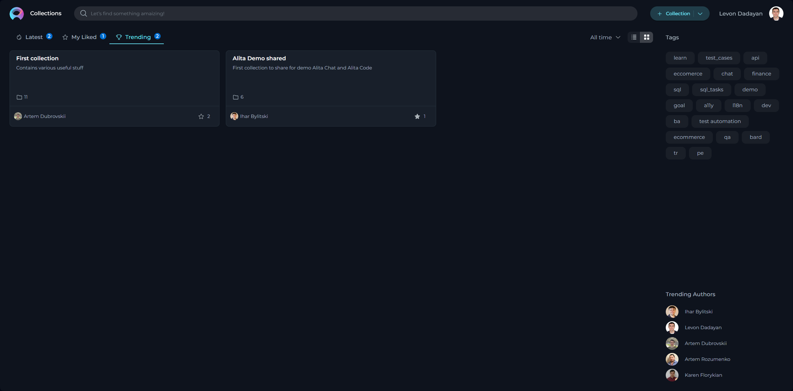

Collections
Private project - Collections menu
The Collections menu within Private project serves as a dedicated inventory for all your collections, irrespective of their current status. Consider it your personal repository for saving and organizing the collections you've crafted.

These features ensure your collections are not only stored securely but also organized in a manner that simplifies management, review, and retrieval, tailoring the user experience to your needs and preferences.
The Purpose and Usefulness of Collections
The Collection serve as a means to group prompts by theme, project, or any other meaningful categorization that enhances accessibility and usefulness for the users. Collections are immensely valuable for several reasons:
- Thematic Organization: They allow for the grouping of prompts by specific themes or projects, making it easy for users to find a set of related prompts.
- Efficiency: By organizing prompts into collections, we save time by providing consolidated resources that can be easily accessed and applied.
- Sharing Best Practices: Collections can be shared across teams, promoting best practices and unified testing approaches across different projects.
How to Create a Collection
Creating a collection allows you to organize and categorize your prompts for better accessibility and management. Follow these steps to create a new collection:
- Click the + Collection button located at the top right corner of the page.
- You will be prompted to fill in the Name and Description fields. It's important to provide clear and concise information here, as this helps others understand the purpose and content of your collection.
- Click Save to create the collection.

Exploring Collections
Exploring collections is straightforward and insightful:
Simply click on the collection card or the name of a collection. This action reveals the prompts contained within the selected collection, providing a comprehensive view of its contents.
Within a collection, you can:
- View and Open available prompts
- Modify Collection (Name and Description)
- Filter Collection by tags
- Publish Collection
- Delete Collection
- Export Collection
How to Modify a Collection
To modify an existing collection:
- Click the Edit icon.
- Update the Name and/or Description of the collection as needed.
- Click Save to apply the changes.
Note: Modifications are restricted for collections that have already been published.
How to Filter Prompts within a Collection
Easily find specific prompts within a collection by selecting applicable tags from the Tags section. This enables efficient organization and retrieval based on subjects or themes.
How to Publish a Collection
To publish a collection:
- Ensure the collection is complete and relevant by reviewing its contents.
- Click the Publish collection icon to submit your collection for review, similar to the individual prompt publishing process. The collection will be evaluated according to guidelines for quality and relevance.
- Once approved, your collection will be published and made available under the Collection menu for community use.
Note: A Collection must contain already published prompts before publication.
How to Delete a Collection
To delete a collection:
Click the Delete icon. Note that deleting a collection does not remove the prompts within it from your library.
Note: Deletion is not possible for published collections.
How to Export a Collection
Exporting a collection allows for its use on different platforms, offering formats tailored to each:
[Alita format]- a JSON format designed for the ELITEA platform, including detailed information like prompt versioning and model configurations.[DIAL format]- a JSON format intended for the Epam AI Dial platform, incorporating platform-specific structuring.
Exporting the Collection:
- Click the Export prompt icon to begin.
- Select your preferred format (Alita or DIAL) for the export.
- An export file will be generated and automatically downloaded to your device, enabling cross-platform utilization.
Collections Menu
The Collections menu is a curated space of grouped prompts shared and published within the community.
Layout of the Collections Menu
Organized into three distinct pages, the Collections menu introduces a structured way to explore and discover grouped prompts:
- Latest: Showcases the most recently published collections, offering insight into the newest themes and ideas being explored by the community.
- My Likes: Features the collections you have liked, creating a personalized library of favored content that can be revisited at any time.
- Trending: Displays collections that have gathered the most likes, serving as an excellent resource for finding highly-regarded and popular collections esteemed by the community.

Engaging with Collections
Participation and interaction within the community are pivotal in highlighting and appreciating valuable collections. Below are ways you can actively engage:
Liking Collections
Each collection, upon curation, becomes a vital resource. To show support and appreciation for a collection, you can use the Like functionality:
- To like a collection, click on the Heart icon associated with it.
- If you wish to withdraw your like, simply click the Heart icon again to Unlike the collection.
Other Actions for Collections
Exploring Published Collections:
Simply click on the collection card or the name of a collection. This action reveals the prompts contained within the opened collection, providing a comprehensive view of its contents.
You will be able to work with published prompts within the collection. Detailed instructions for this process are available in the Other Actions for Published Prompts section.
Exporting Collections:
Collections can be exported for sharing or external use. Detailed instructions for this process are available in the How to Export a Collection section.